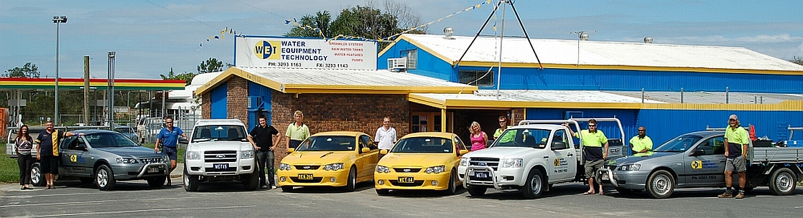

About Us
We are a Design and Consultancy Business.
Water Equipment Technology is a professional company that offers critical support in harvesting, storing and the efficient application of your water supply.
The staff at WET have eighty years consultancy experience between them, over thirty five years in the industry which gives ability to provide the best level of service in the market place.
Our business strategy is Sustainable Water Management Solutions.
A sustainable quality water supply is the life blood of any Agricultural Property, Horticultural Garden or Sporting Arena. This day and age, such irrigators must have their own water supply complete with a water usage management plan to guarantee themselves of an uninterrupted sustainable water supply.
